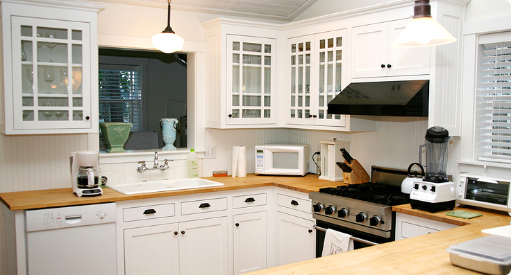
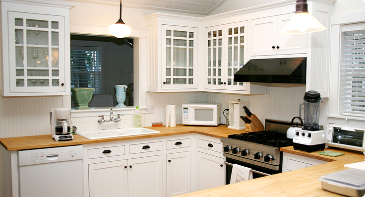

BEM VINDO!
Esta página foi produzida no IFCE Campus Cedro pela aluna Myrlla Lucas Pereira
Esta é uma avaliação prática da disciplina "Tecnologias Web", ministrada pelo Professor Emannuel Diego no 1 semestre do curso de Bacharelado em Sistemas de Informação.
Neste trabalho são utilizadas técnicas de banner, transições e criação de menus interativos.
Para o desenvolvimento, utilizou-se apenas HTML5 e CSS3.
Visite nosso projeto anterior: Projeto 01, Projeto 02... (esses são apenas referentes a avaliação, mas foram feitos outros em atividades de laboratório.